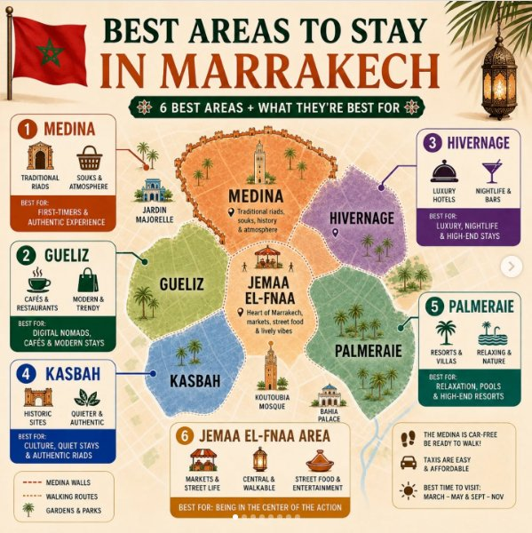
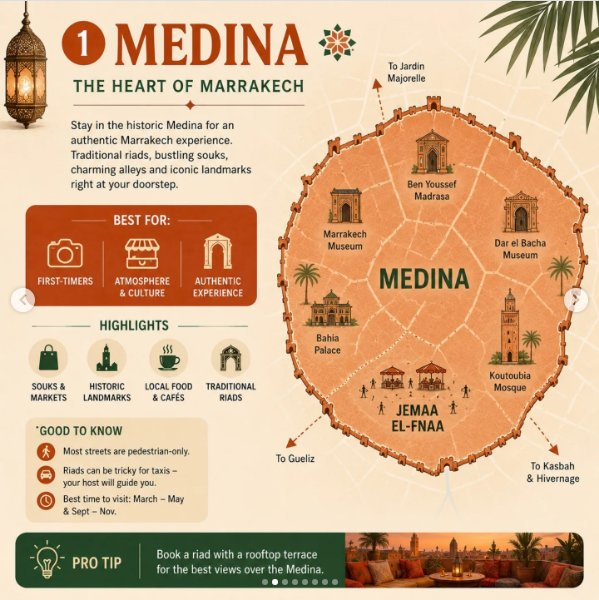
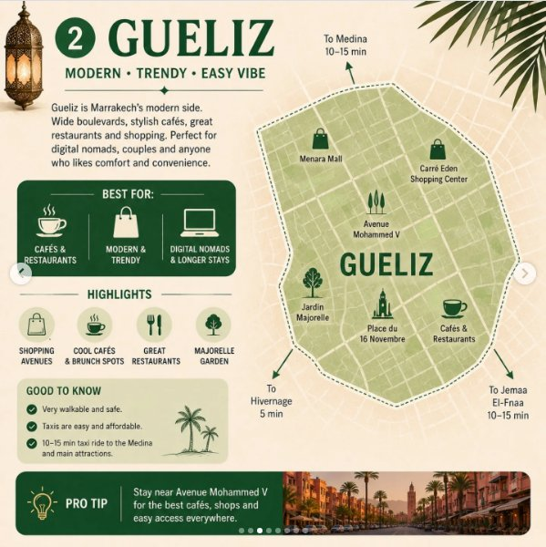
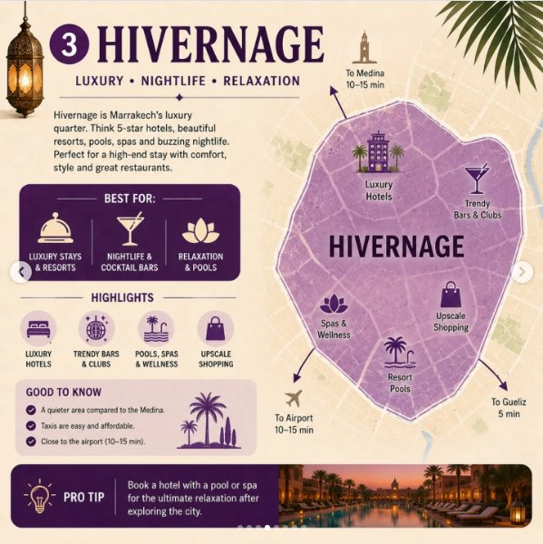
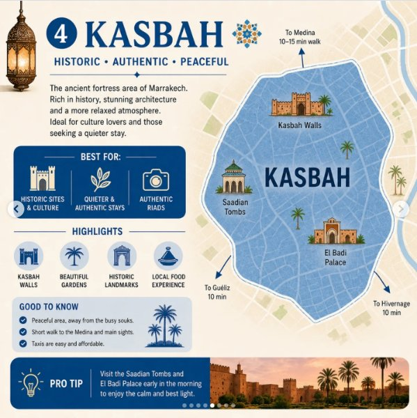
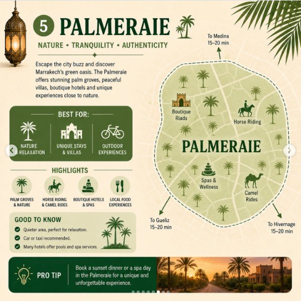
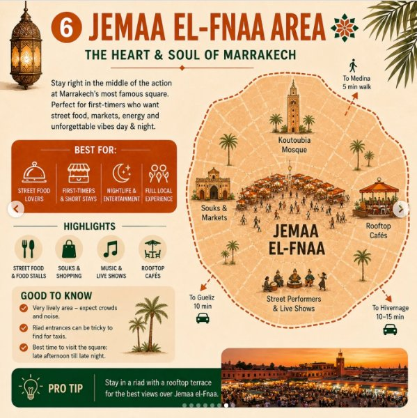
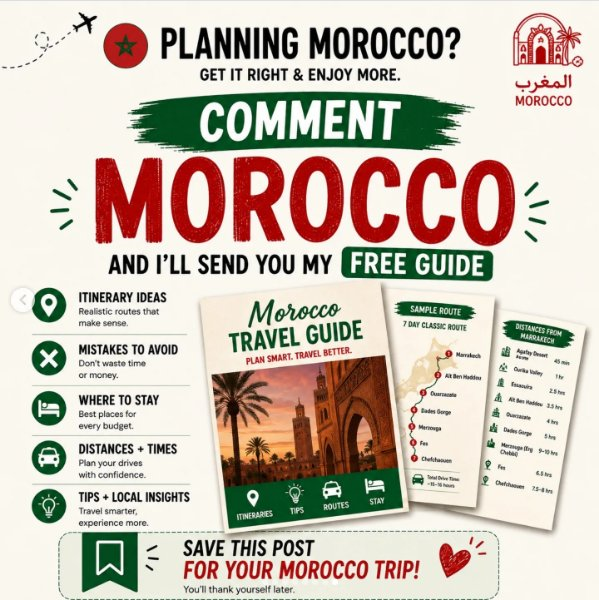

Instagram Post

Planning a trip to Marrakech? 🇲🇦
carousel (8 slides) (enriched by ClaudeClaw)
Summary
BEST AREAS TO STAY IN MARRAKECH 6 BEST AREAS + WHAT THEY'... | 1 MEDINA THE HEART OF MARRAKECH Stay in the historic Medi... | 2 GUELIZ MODERN • TRENDY • EASY VIBE Gueliz is Marrakech'... | 3 HIVERNAGE LUXURY • NIGHTLIFE • RELAXATION Hivernage is ... | 4 KASBAH HISTORIC • AUTHENTIC • PEACEFUL To Medina 10-15 ... | 5 PALMERAIE NATURE • TRANQUILITY • AUTHENTICITY Escape th... | 6 JEMAA EL-FNAA ARE...
Caption
Planning a trip to Marrakech? 🇲🇦
Choosing the right area can completely change your experience.
Some areas are better for: • traditional riads & souks. • luxury hotels & pools. • quieter stays. • cafés & modern vibes. • or being right in the middle of the action.
Here are some of the best areas to stay in Marrakech and what they’re actually best for.
Save this for your Morocco trip 🇲🇦
Comment “MOROCCO” and I’ll send you my free Morocco travel guide.
#MoroccoTravelGuide #Marrakech #MoroccoTravel #MoroccoTrip
1
BEST AREAS TO STAY IN MARRAKECH 6 BEST AREAS + WHAT THEY'RE BEST FOR 1 MEDINA TRADITIONAL RIADS SOUKS & ATMOSPHERE BEST FOR: FIRST-TIMERS & AUTHENTIC EXPERIENCE JARDIN MAJORELLE MEDINA Traditional riads, souks, history & atmosphere 3 HIVERNAGE LUXURY HOTELS NIGHTLIFE & BARS BEST FOR: LUXURY, NIGHTLIFE & HIGH-END STAYS 2 GUELIZ CAFÉS & RESTAURANTS MODERN & TRENDY BEST FOR: DIGITAL NOMADS, CAFÉS & MODERN STAYS GUELIZ JEMAA EL-FNAA Heart of Marrakech, markets, street food & lively vibes 5 PALMERAIE RESORTS & VILLAS RELAXING & NATURE BEST FOR: RELAXATION, POOLS & HIGH-END RESORTS 4 KASBAH HISTORIC SITES QUIETER & AUTHENTIC BEST FOR: CULTURE, QUIET STAYS & AUTHENTIC RIADS KASBAH KOUTOUBIA MOSQUE BAHIA PALACE 6 JEMAA EL-FNAA AREA MARKETS & STREET LIFE CENTRAL & WALKABLE STREET FOOD & ENTERTAINMENT BEST FOR: BEING IN THE CENTER OF THE ACTION MEDINA WALLS WALKING ROUTES GARDENS & PARKS THE MEDINA IS CAR-FREE BE READY TO WALK! TAXIS ARE EASY & AFFORDABLE BEST TIME TO VISIT: MARCH - MAY & SEPT - NOV
An infographic map of Marrakech highlights six best areas to stay, detailing their characteristics, attractions
2
1 MEDINA THE HEART OF MARRAKECH Stay in the historic Medina for an authentic Marrakech experience. Traditional riads, bustling souks, charming alleys and iconic landmarks right at your doorstep. BEST FOR: FIRST-TIMERS ATMOSPHERE & CULTURE AUTHENTIC EXPERIENCE HIGHLIGHTS SOUKS & MARKETS HISTORIC LANDMARKS LOCAL FOOD & CAFÉS TRADITIONAL RIADS GOOD TO KNOW Most streets are pedestrian-only. Riads can be tricky for taxis - your host will guide you. Best time to visit: March - May & Sept - Nov. PRO TIP Book a riad with a rooftop terrace for the best views over the Medina. To Jardin Majorelle Ben Youssef Madrasa Dar el Bacha Museum Koutoubia Mosque To Kasbah & Hivernage To Gueliz Bahia Palace Marrakech Museum MEDINA JEMAA EL-FNAA
An infographic details the Medina of Marrakech, featuring a map of the area with labeled landmarks, descriptive text, and travel tips, adorned with Moroccan design elements.
3
2 GUELIZ MODERN • TRENDY • EASY VIBE Gueliz is Marrakech's modern side. Wide boulevards, stylish cafés, great restaurants and shopping. Perfect for digital nomads, couples and anyone who likes comfort and convenience. BEST FOR: CAFÉS & RESTAURANTS MODERN & TRENDY DIGITAL NOMADS & LONGER STAYS HIGHLIGHTS SHOPPING AVENUES COOL CAFÉS & BRUNCH SPOTS GREAT RESTAURANTS MAJORELLE GARDEN GOOD TO KNOW Very walkable and safe. Taxis are easy and affordable. 10-15 min taxi ride to the Medina and main attractions. PRO TIP Stay near Avenue Mohammed V for the best cafés, shops and easy access everywhere. To Medina 10-15 min Menara Mall Carré Eden Shopping Center Avenue Mohammed V GUEL
4
3 HIVERNAGE LUXURY • NIGHTLIFE • RELAXATION Hivernage is Marrakech's luxury quarter. Think 5-star hotels, beautiful resorts, pools, spas
5
4 KASBAH HISTORIC • AUTHENTIC • PEACEFUL To Medina 10-15 min walk The ancient fortress area of Marrakech. Rich in history, stunning architecture
6
5 PALMERAIE NATURE • TRANQUILITY • AUTHENTICITY Escape the city buzz and discover Marrakech's green oasis. The Palmeraie offers stunning palm groves, peaceful villas, boutique hotels and unique experiences close to nature. BEST FOR: NATURE RELAXATION UNIQUE STAYS & VILLAS OUTDOOR EXPERIENCES HIGHLIGHTS PALM GROVES & NATURE HORSE RIDING & CAMEL RIDES BOUTIQUE HOTELS & SPAS LOCAL FOOD EXPERI
7
6 JEMAA EL-FNAA AREA THE HEART & SOUL OF MARRAKECH Stay right in the middle of the action at Marrakech's most famous square. Perfect for first-timers who want street food, markets, energy and unforgettable vibes day & night. BEST FOR: STREET FOOD LOVERS FIRST-TIMERS & SHORT STAYS NIGHTLIFE & ENTERTAINMENT FULL LOCAL EXPERIENCE HIGHLIGHTS STREET FOOD & FOOD STALLS SOUKS & SHOPPING MUSIC & LIVE SHOWS ROOFTOP CAFÉS GOOD TO KNOW Very lively area -
8
PLANNING MOROCCO? GET IT RIGHT & ENJOY MORE. المغرب MOROCCO COMMENT MOROCCO AND I'LL SEND YOU MY FREE GUIDE ITINERARY IDEAS Realistic routes that make sense
All slides






